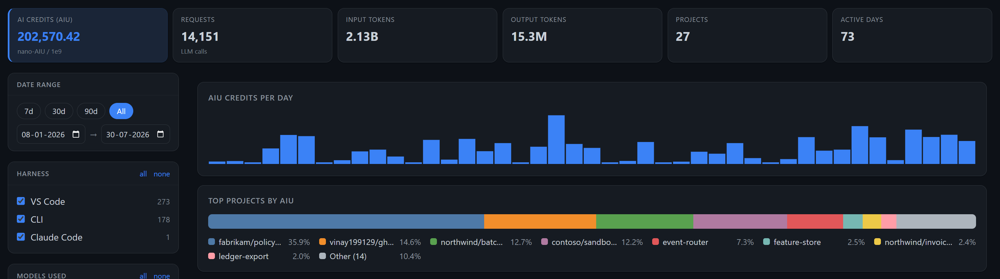
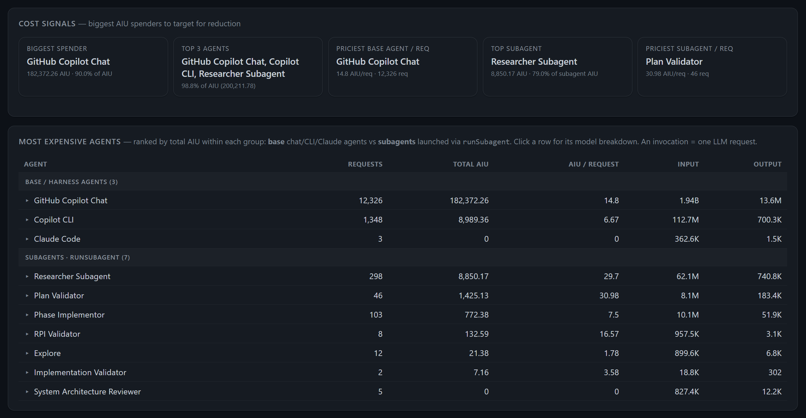
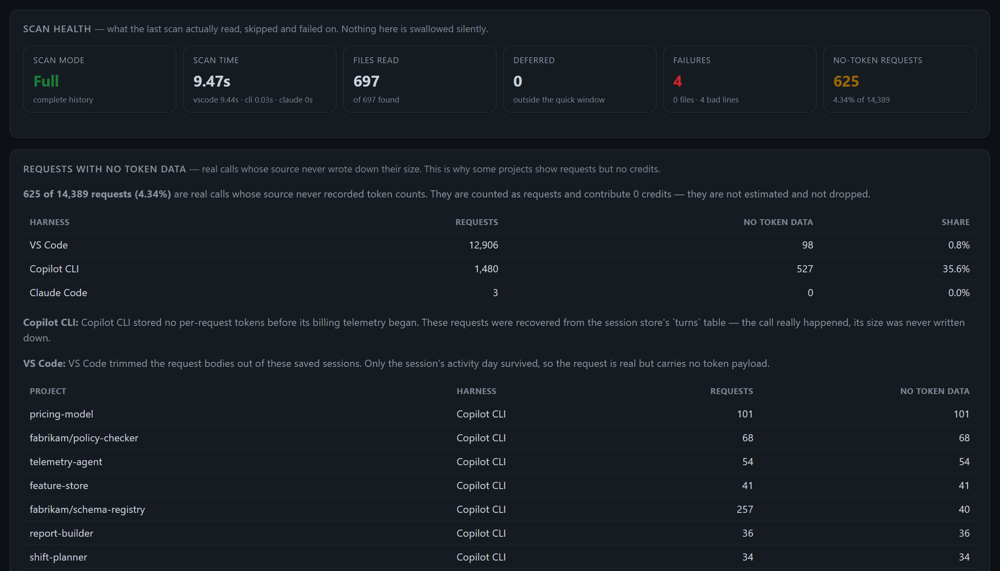
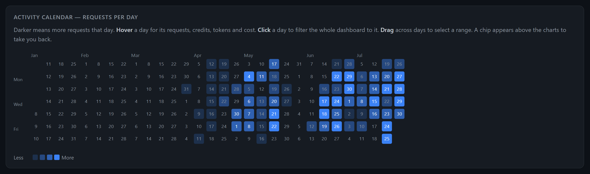

GitHub Copilot usage metrics.
In this talk, “we” means Vinay + GitHub Copilot.
A local extractor and dashboard that reports what GitHub actually recorded about your Copilot usage — and a working test of one idea: software fundamentals matter more in the AI era, not less.
Those are this project's own numbers, measured by itself. They work out at 24.45 credits per request — 65% above my everyday average of 14.8, because a refactor this deep re-reads the codebase on almost every turn. I only know that because the tool told me.
The principle, compressed
AI can make writing code cheap.
It does not make owning code cheap.
Regenerating a codebase from a spec without reading it produces worse code each pass. That is software entropy, and it is not new.
A codebase that is hard to change cannot absorb the speed AI offers. So a good codebase matters more than ever — and that is a fundamentals problem.
AI is an excellent tactical programmer. The strategic layer stays yours.
| Failure mode | The fix, and what we used |
|---|---|
| It built the wrong thing | Reach a shared design concept before producing any plan |
| It is too verbose | A ubiquitous language — one agreed word per concept → DOMAIN.md |
| It doesn't work | Fast feedback loops and TDD, because the feedback rate is the speed limit |
| Testing is painful | Deep modules — lots of functionality behind a simple interface |
| Your brain can't keep up | Design the interface, delegate the implementation, verify at the boundary |
talk/index.html.What we built

VS Code 90.5% of requests · Copilot CLI 9.5% · Claude Code the remainder. No official API gives per-project or per-subagent detail, so local logs are the only source.
How it works
Read-only on local files. No upload, no telemetry, no network call.
A malformed line loses that line, not the scan. It is counted and named in Diagnostics.
Standard library only, so there is nothing to install and nothing to trust.
Ways of working with the metrics
Project (aggregate root — the only thing listed) │ └── one record per harness vscode │ cli │ claude ├── by_day date → sessions, requests, in, out, aiu ├── by_model model → requests, in, out, aiu ├── by_agent agent → requests, in, out, aiu ├── by_am agent × model ├── by_dm date × model ← unlocked full filtering ├── by_sdm session × date × model ├── by_skill skill └── by_tool / by_lang
Every dimension is the same requests, sliced differently. That is why the totals must agree — and why disagreement means double-counting, not merely untidiness.
by_dm must decompose on both axes: summed per date it equals
by_day; summed per model it equals by_model. Checked against real
data on every run.
Each names the test that enforces it — or is explicitly marked NOT ENFORCED. There is no third category, so a rule can never quietly become false.
One session can span models, so by_dm deliberately carries no session count.
Under a model filter the Sessions column shows — rather than a number nobody
could defend.
Why these decisions
| Decision | Why | What it cost, honestly |
|---|---|---|
| Show only what was recorded | The tool once estimated missing credits. The totals looked better and were wrong, with no way to tell which parts. | Removing estimation dropped the headline by ~25,000 credits. That trade is the whole product — a gap is now reported as a gap. |
| Split into deep modules | Two files were the entire system, so nothing could be tested or delegated safely. | usage.py 1001 → 216 lines, build_dashboard.py 2249 → 50, plus 24 focused modules. More files to navigate, in exchange for changeability. |
| Write the test first | We were not doing this. Tests written after the code record what it does, including its mistakes. | A false claim was documented three times and pinned by a passing test. Testing the claim instead exposed by_dm — a whole capability we had declared impossible. |
| Delete a fallback rather than name it | An unknown-model placeholder had never once fired across 51 projects and 14,119 requests. | It now raises and lands in Diagnostics naming the file. A format change announces itself instead of hiding in a bucket nobody can read. |
| Make drift fail a test | The tool ships from one source to four places, and none of them notice when they fall behind. | A stale copy is a red test, not wrong numbers weeks later. Costs one command after every edit. |
What it gives you · 1 of 2

The finding worth acting on: subagents are a rounding error in total spend and roughly 1.6× the price per request. Worth it for research and review; not for work the main agent already does well.
What it gives you · 2 of 2


Projects the run rate against a budget you set — and labels itself a projection everywhere it appears, so an estimate is never mistaken for something GitHub recorded.
697 files read, 0 deferred, 4 failures named with their file. Nothing is swallowed silently.
python usage.py, as a VS Code extension, or as a chat skill that answers
questions from the same artifact · github.com/vinay199129/ghcp-usage-metrics ·
long-form argument in talk/index.html, deep dive in ARCHITECTURE.md
and DOMAIN.md